4.2 — Writing an Empirical Paper
ECON 480 • Econometrics • Fall 2022
Dr. Ryan Safner
Associate Professor of Economics
safner@hood.edu
ryansafner/metricsF22
metricsF22.classes.ryansafner.com
Contents
Research Question
- A good paper has a specific research question that you will ask and provide evidence towards a clear, quantifiable answer. Good research questions are:
- A claim about something
- Capital punishment is the most efficient deterrent for violent crimes.
- Women are paid, on average, 33% less than men performing the same work.
- *As specific as possible**, given the length constraints
- Do candidates that spend more money than their opponents tend to win Congressional races?
- Testable, with data that can provide some evidence one way or another
- One study will never be “the” definitive proof of something, only suggestive evidence
Structure of an Empirical Paper
Structure of an Empirical Paper
Introduction
Literature Review
Theory/Model
Data Description
Empirical Model
Results/Implications
Bibliography
Introduction I
Get to your research question ASAP! Make it the first sentence even.
Hook your reader
- Who cares? Why is this important? Why is this relevant? How does this affect people?
- Statistics and background information can often help
- Who cares? Why is this important? Why is this relevant? How does this affect people?
Example
As a student writing an empirical research paper, does writing a longer paper earn a higher grade on the assignment?
Introduction II
- State your research question clearly and quickly
- Do NOT write a “blog post” about how you became interested in the question, or all the work (and dead-ends) that led you on the journey to reaching your final answer
- Nobody cares about the labor pains, they just want to see the baby!
- Provide an outline of the rest of the paper:
- Why your question matters
- How you answer the question in this paper
- What your identification strategy is and what models you use
- What data you use
- What your most important results are
Introduction III
Example
I estimate the relationship between paper length and grades by using a simple OLS regression using sample data collected from previous classes. I find that there is a weak positive effect, that students who write longer papers earn higher grades. On average, for every additional page written, grades improve by less than a point. These results are robust to a number of different model specifications and controls.
Introduction IV
Most people do not write enough in their introductions
Consider the incentives of a (skimming) reader pressed for time
- If someone only skims your intro, what do you want them to know??
My rough suggestion: make your introduction about 15-20% of your paper:
| Paper Length | Intro Length |
|---|---|
| 5 pages | 1-1.5 pages |
| 10 pages | 2-2.5 pages |
| 30 pages | 5 pages |
Literature Review
Literature Review can be summarized into the introduction or given its’ own section (debatable)
No work is totally original. It’s okay!
- What have other relevant researchers written and discovered about your topic?
- What data and models did they use? What did they find?
- How does your paper connect and stand apart from what’s been done?
- Does your paper use different data? A different model? Different controls?
Theory I
This is an economics course, so you must describe some economic theory behind the question you are asking and answering
Most scholarly papers have a formal economic model, which then generates predictions that they test for with data
You do not need a theoretical model, but you do need to discuss economic principles or concepts that are relevant
- Often there may be multiple theories that might conflict, or our expectations might not be clear (these are the best papers!)
- There may be a significant tradeoff between competing goals, values, or expectations
Theory II
Example
Students that write longer papers likely place higher value on their work and dedicate more resources towards improving its quality, resulting in higher grades.
However, some students may hope or believe that longer papers automatically lead to higher grades, and thus will merely put extra low quality filler in their paper to inflate the length. These papers turn out to be much worse quality, and these students likely earn lower grades as a result.
Data I
- Describe your data sources
- Who collected or compiled the data and how?
- e.g. government agencies, businesses, nonprofits, social surveys, etc.
- If you collected your own data (unlikely), what was your procedure?
- Who collected or compiled the data and how?
Data II
- Describe the data itself
- What are your variables? What—specifically, and in English—does each measure?
- How many observations do you have?
- If you transformed your variables—how and why?
- e.g. recoded into categories or dummies
- e.g. took logs or rescaled units
Data III
- Show your data! Show us basic summary statistics and any patterns
- Use your judgment: we don’t want or need to see everything
- What do you think is interesting or important?
- Plots \(>\) Tables \(>\) Words \(>\) Nothing
- Good ideas to always have:
- A table(s) of all variables used and their description
- A table(s) of summary statistics of variables
- A table of correlations of key variables (optional)
- Plots of (only) the most important variables & relationships (histograms, boxplots, scatterplots, etc)
Data: Variables
| Variable | Description |
|---|---|
| Grade | Grade on paper assignment (0-100) |
| Pages | Number of pages written |
| Final | Final course grade for student |
| Gender | Gender of student |
| Class | Class in which paper was assigned |
| School | School of class taught |
| Year | Year of class |
| Time | Time of day class met |
| Covid | Course during Covid? |
I collected data at the individual student level from all paper assignments that I have given over the 2013—2021 period at the 3 colleges I have taught at.
Data Correlations
Data: Summary Statistics of Quantitative Variables
| Variable | Obs | Min | Q1 | Median | Q3 | Max | Mean | Std. Dev. |
|---|---|---|---|---|---|---|---|---|
| Covid | 232 | 0.0 | 0.00 | 0.00 | 1 | 1.00 | 0.26 | 0.44 |
| Econometrics | 232 | 0.0 | 0.00 | 0.00 | 1 | 1.00 | 0.31 | 0.46 |
| Female | 232 | 0.0 | 0.00 | 0.00 | 1 | 1.00 | 0.40 | 0.49 |
| Final | 232 | 8.5 | 82.66 | 87.88 | 94 | 109.09 | 86.15 | 13.15 |
| Grade | 232 | 0.0 | 83.75 | 87.50 | 92 | 100.00 | 84.05 | 18.18 |
| Hood | 232 | 0.0 | 1.00 | 1.00 | 1 | 1.00 | 0.78 | 0.42 |
| Morning | 232 | 0.0 | 0.00 | 1.00 | 1 | 1.00 | 0.64 | 0.48 |
| Pages | 232 | 0.0 | 7.00 | 9.00 | 12 | 24.00 | 9.50 | 4.41 |
| Remote | 232 | 0.0 | 0.00 | 0.00 | 0 | 1.00 | 0.11 | 0.32 |
| Year | 232 | 2014.0 | 2016.00 | 2017.00 | 2020 | 2022.00 | 2017.53 | 2.60 |
Data: Frequency Tables of Categorical Variables I
| Year | n |
|---|---|
| 2014 | 51 |
| 2016 | 38 |
| 2017 | 39 |
| 2018 | 13 |
| 2019 | 30 |
| 2020 | 26 |
| 2021 | 12 |
| 2022 | 23 |
| Sex | n |
|---|---|
| F | 93 |
| M | 139 |
| Time | n |
|---|---|
| Afternoon | 83 |
| Morning | 149 |
| Class | n |
|---|---|
| Econometrics | 72 |
| Game Theory | 33 |
| HET | 11 |
| IEP | 51 |
| IO | 22 |
| Public Economics | 20 |
| Trade | 23 |
Data: Frequency Tables of Categorical Variables II
| School | n |
|---|---|
| GMU | 51 |
| Hood | 181 |
| Covid | n |
|---|---|
| No | 172 |
| Yes | 60 |
| Remote | n |
|---|---|
| No | 206 |
| Yes | 26 |
Data: Histogram I
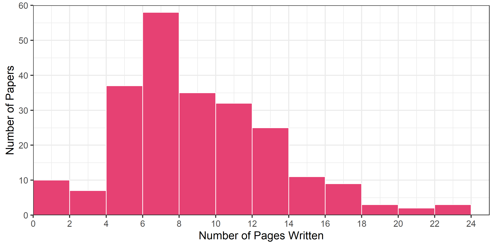Data: Histogram II
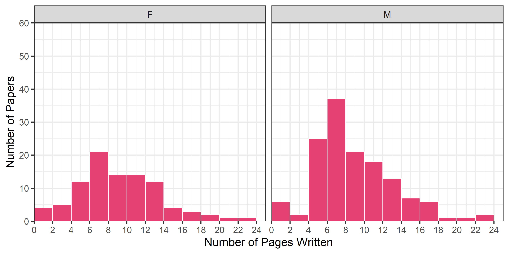Data: Histogram III
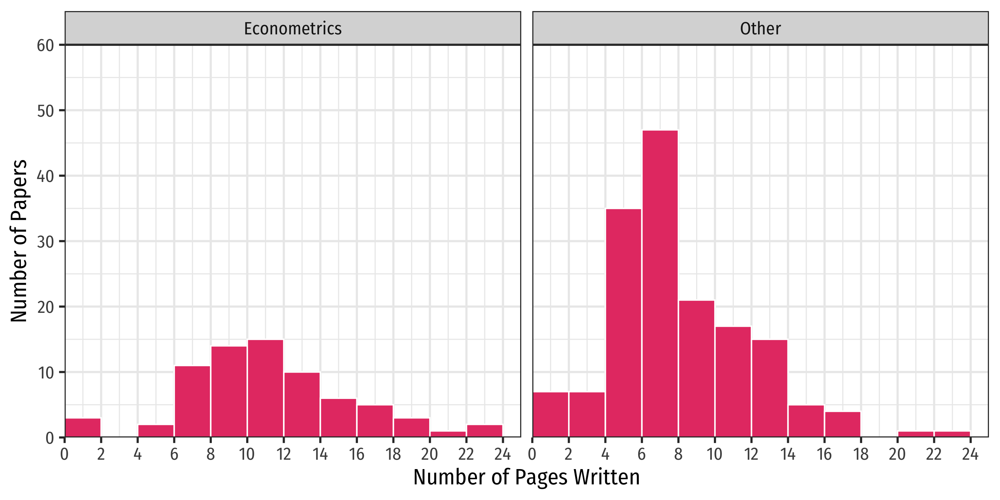Data: Scatterplot I
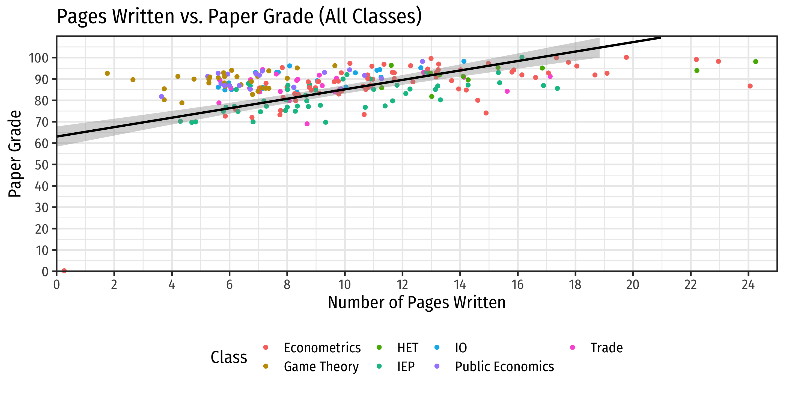Data: Scatterplot I
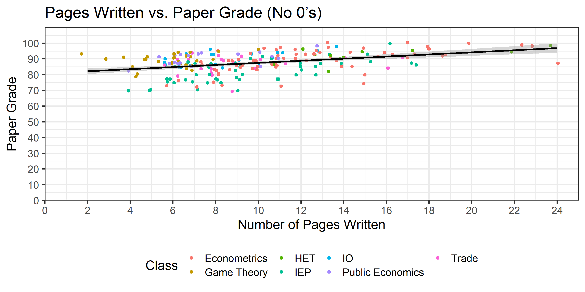Data: Scatterplot III
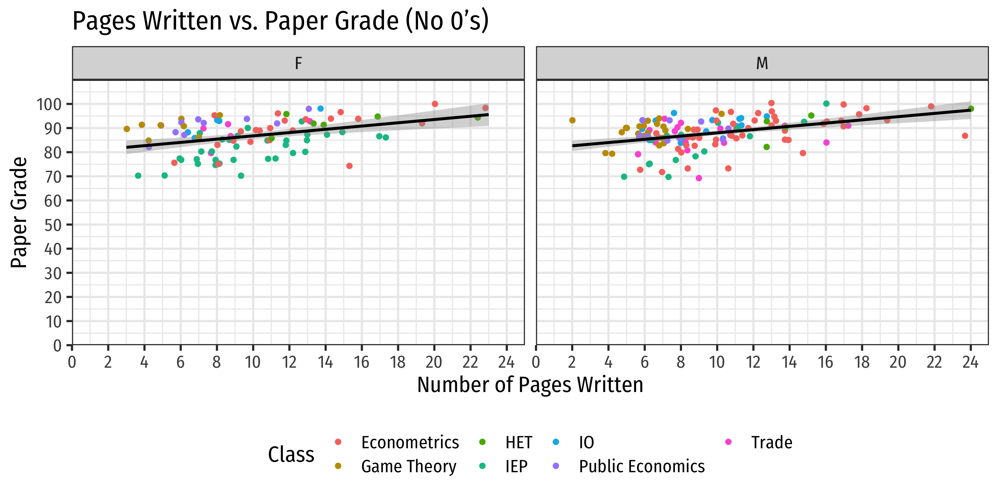Data: Scatterplot IV
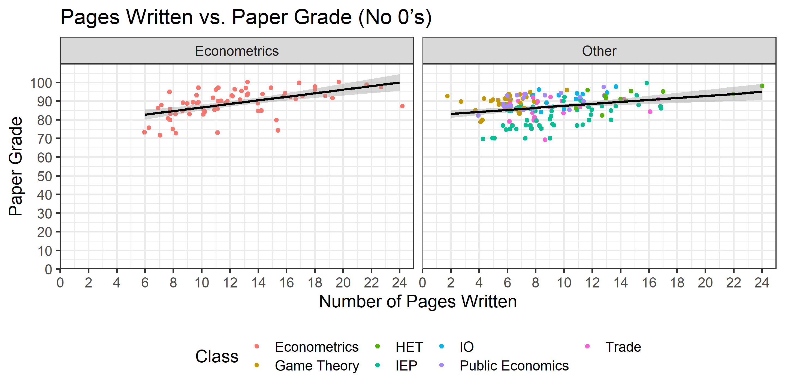Data: Scatterplot V
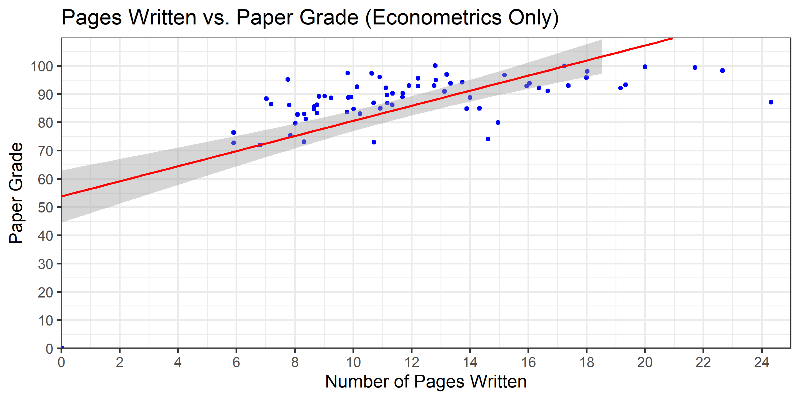Empirical Model I
Describe your empirical model and your identification strategy
- for most of you, just OLS and trying to include as many controls to remove omitted variable bias
Why did you pick certain variables?
How do you battle endogeneity?
Hypothesize your expected size and magnitude of key variables
- Give some economic intution behind what we would expect!
Empirical Model II
Grade plausibly caused by length (pages), effort, school (uni), gender, course, topic, covid, and time (of day)
Time of day probably unrelated to length…can safely ignore (don’t need to control for)
Don’t have good data on topic
Can’t directly measure for the amount of effort you put in, but I can proxy for it with the final grade in the course (strongly correlated with effort)
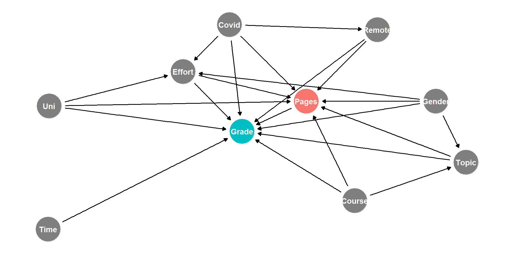
Empirical Model II
- So I need to control for course, covid, effort (proxied by final grade), gender, remote, (if I had data on it…) topic, and university in order to identify the causal effect of length on grade

Empirical Model III
Example
\[\begin{align*} \text{Paper Grade}_i=& \, \beta_0+\beta_1\text{Paper Length}_i+\beta_2\text{Course Grade}_i\\ &+\beta_3\text{Gender}_i+\beta_4\text{School}_i+\beta_5\text{Covid}_i\\ &+\beta_6\text{Course}_i+\beta_7\text{Remote}_i+u_i\\ \end{align*}\]
\(Length\) is the most important variable we care about
\(Length\) probably endogenous, correlated with those other Grade-determining factors:
- Why I included these controls!
Likely expect \(Length\) to be positive and small
Empirical Model III
Example
\[\begin{align*} \text{Paper Grade}_i=& \, \beta_0+\beta_1\text{Paper Length}_i+\beta_2\text{Course Grade}_i\\ &+\beta_3\text{Gender}_i+\beta_4\text{School}_i+\beta_5\text{Covid}_i\\ &+\beta_6\text{Course}_i+\beta_7\text{Remote}_i+u_i\\ \end{align*}\]
You are probably interested specifically in the relationship only for econometrics papers, so we can focus Course specifically to a binary variable \(Metrics\) to see how the results differ between non-econometrics courses
Alternatively, we can restrict our sample to only past econometrics classes
Empirical Model IV
- Describe the limitations of your model
- Every paper, even Nobel prize-winning ones, have limitations and problems!
- Limited and/or poor quality data
- Endogeneity, simultaneous causation, omitted variable bias
Example
The model likely suffers from endogeneity, as how many pages a student writes is likely to be positively correlated with personal attributes like diligence, conscientiousness, and intelligence, which themselves are likely positively correlated with the grade of the paper. Thus, we have likely overstated the effect of page length on paper grades. Furthermore, we are unable to measure other variables that make page length endogenous, such as the topic that was chosen. Some topics lend themselves to shorter or longer papers and may have better or worse data that make it easier or difficult to run a clean empirical test.
Empirical Model V
- Are your results robust across different model specifications?
- Do the size(s) of the marginal effect(s) you care about change or reverse direction? Become/lose significance?
- At minimum, you must run several models, including a multivariate regression
- Run several variations of your model with and without controls (e.g. just \(Y\) and \(X\), \(Y\) and \(X_1\) and \(X_2\), etc.)
- Check for nonlinearities: polynomials, logs, etc.
Results I
Print a table(s) of your regression(s) results (
modelsummaryand other packages can help)Interpret your data (in the text of the paper)
- What does a marginal (1 unit) change in \(X\) mean for \(Y\), a 1% change, etc?
- Is each coefficient statistically significant (at 10%, 5%, or 1% levels)?
| Baseline | No 0s | Econometrics Only | With Controls | Hood Only | Metrics Only | Metrics Only No 0s | |
|---|---|---|---|---|---|---|---|
| Pages | 2.21*** | 0.67*** | 2.67*** | 0.56*** | 0.60*** | 0.83*** | 0.46*** |
| (0.23) | (0.10) | (0.37) | (0.09) | (0.21) | (0.28) | (0.13) | |
| Course Grade | 0.31*** | 1.03*** | 0.89*** | 0.50*** | |||
| (0.04) | (0.07) | (0.10) | (0.05) | ||||
| Male | 0.30 | 2.95* | 2.59 | 0.79 | |||
| (0.70) | (1.60) | (2.36) | (1.07) | ||||
| Hood | 6.53*** | ||||||
| (0.96) | |||||||
| Non-metrics Course | 2.32*** | 2.07 | |||||
| (0.82) | (1.67) | ||||||
| During Covid | 0.01 | −7.91*** | −12.69*** | −4.48*** | |||
| (0.96) | (1.84) | (3.01) | (1.44) | ||||
| Taught Remotely | −1.94 | 3.20 | 10.73** | 1.70 | |||
| (1.27) | (2.55) | (4.46) | (2.07) | ||||
| N | 232 | 223 | 72 | 223 | 181 | 72 | 69 |
| Adj. R2 | 0.28 | 0.16 | 0.42 | 0.53 | 0.70 | 0.79 | 0.70 |
| SER | 15.31 | 6.19 | 14.39 | 4.54 | 9.16 | 8.40 | 3.74 |
| * p < 0.1, ** p < 0.05, *** p < 0.01 |
Results II
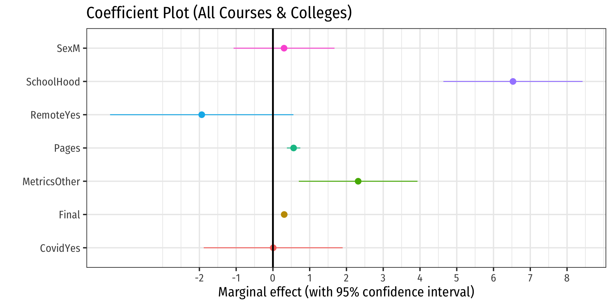
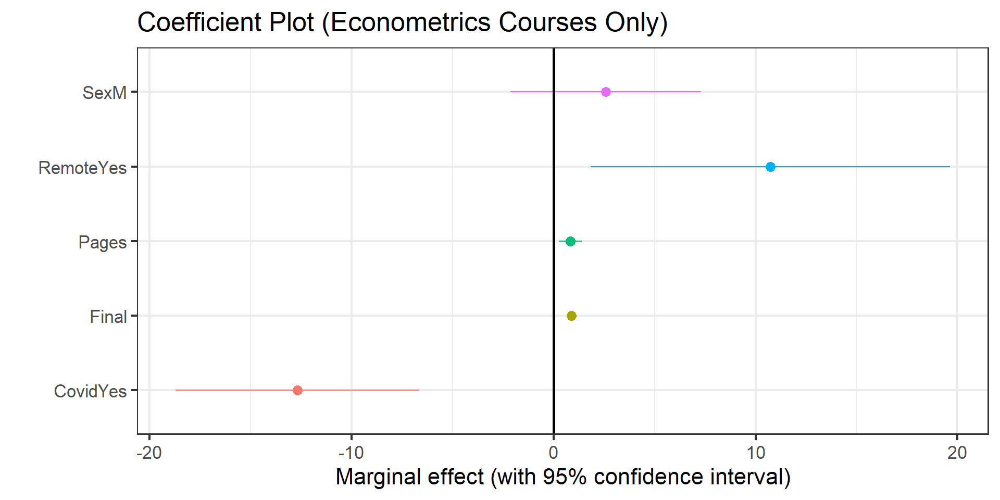
Results: Interpretation! I
Are your estimates economically significant?
How big is “big”?
“No economist has achieved scientific success as a result of a statistically significant coefficient. Massed observations, clever common sense, elegant theorems, new policies, sagacious economic reasoning, historical perspective, relevant accounting, these have all led to scientific success. Statistical significance has not.” — McCloskey & Ziliak (1996: 112)
Results: Interpretation! II
Results: Interpretation! III
Example
I find that for every additional page written, we can expect a paper’s grade to increase by about a point or less, after controlling for other factors such as Final grade (proxying as a measure of overall diligence and intelligence), sex, and course. In the most relevant sample, econometrics students, the marginal effect is even smaller, only less than half of a point increase for every additional page written.
However, we should not make much of these results due to the likely endogeneity of Pages due to unobserved factors such as topic and quality of writing, which clearly would matter much both for length and for grade. It would be poor advice to recommend students simply to write long papers to earn a higher grade.
Results: Implications
- Describe several implications of your paper
- Policy implications
- Proposals for new research
- Effects on current understanding
- What else should we try to found out to answer the question better?
Don’t Get Discouraged I
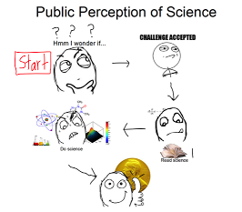
Don’t Get Discouraged I
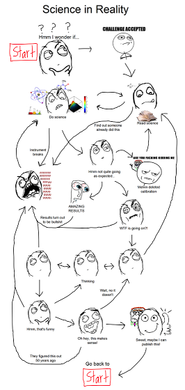
Don’t Get Discouraged II
Albert Einstein
1870-1924
“If we knew what it was we were looking for, we wouldn’t call it research, would we?”
Deadlines and Reminders (From the Assignment Page)
| Assignment | Points | Due Date | Description |
|---|---|---|---|
| Abstract | 5 | Fri Oct 28 | Short summary of your ideas |
| Literature Review | 10 | Fri Nov 18 | 1-3 paragraphs on 2-3 scholarly sources |
| Data Description | 10 | Mon Nov 28 | Description of data sources, and some summary statistics |
| Presentation | 5 | Nov 30/Dec 5 | Short presentation of your project so far |
| Final Paper Due | 70 | Fri Dec 9 | Email to me paper, data, and code |
Grading of Final Paper (From the Assignment Page)
| Category | Points |
|---|---|
| Persuasiveness | 10 |
| Clarity | 10 |
| Econometric Validity | 20 |
| Economic Soundness | 20 |
| Organization | 5 |
| References | 5 |
| TOTAL | 70 |
Submitting Your Final Paper
When you send your final email (by Monday December 6), it should contain the following files:
- Your final paper as a
.pdf. It should include an abstract and bibliography and all tables and figures contained within it. - The (commented!) code used for your data analysis (i.e. loading data, making tables, making plots, running regressions). These can be either
.Rfiles: one or multiple (one-per-task) are equally fine OR a.qmdfile. I want to know how you reached the results you got! Reproducibility is the goal! - Your data used, in whatever original format you found it (e.g.
.csv,.xlsx,.dta)
Again, you are not obligated to use Quarto to write your paper. Microsoft Word is fine.
Some Examples
Example 1
“Exploring the Effects of Children and Marriage on Men’s and Women’s Incomes”
\[\begin{align*} \text{Income}_i = & \, \beta_0+\beta_1 \text{Number of Children}_i\\ &+ \beta_2 \text{Math SAT Score}_i + \beta_3 \text{Sex}_i + \beta_4 \text{Hours Worked per Week}_i\\ &+ \beta_5 \text{Married}_i+u_i\\ \end{align*}\]
- Cross-sectional data for individual \(i\)
Example 2
“Does Spending More on the Offensive Line & the Defensive Line Affect NFL Team Wins?”
\[\begin{align*} \text{Wins}_{ty} = & \, \beta_0+\beta_1 \text{OL & DL Spending}_{ty}\\ &+ \beta_2 \text{Quarterback Spending}_{ty}\\ &+\beta_3 \text{Defensive Coach Spending}_{ty}+\alpha_r+\tau_y+\epsilon_{it}+u_{ty}\\ \end{align*}\]
- Panel data with two way fixed effects for team \(t\) in year \(y\);
Example 3
“Buy You a Vote”
\[\begin{align*} \text{Vote Share}_{it} = & \, \beta_0+\beta_1 \text{Incumbent}_{it} + \beta_2 \text{Incumbent Spending}_{it}\\ &+ \beta_3 \text{Non-Incumbent Spending}_{it}+\beta_4 \text{Number of Candidates}_{it}\\ &+\beta_5 \text{Political Party}_{it}+\alpha_i+\tau_t+\epsilon_{it}\\ \end{align*}\]
- Panel data with two way fixed effects for candidate \(i\) at time \(t\)
Example 4
“A Cross-Sectional Study on the Effect of State Minimum Wage on Youth Unemployment at the State Level”
\[\begin{align*} \text{ln(Unemployment Rate)}_{i} = & \, \beta_0+\beta_1 \text{ln(Minimum Wage)}_{i} + \beta_2 \text{Spending per Student}_{i}\\ &+ \beta_3 \text{Poverty Rate}_{i}+u_i \\ \end{align*}\]
- Cross-sectional data for U.S. State \(i\)
Example 5
“Is Twitter Strong Enough to Measure NBA Player Performance?”
\[\begin{align*} \text{Player Impact Estimate}_{i} = & \, \beta_0+\beta_1 \text{ln(Number of Twitter Followers)}_{i} + \beta_2 \text{Age}_{i}\\ &+ \beta_3 \text{Games Played}_{i}+\beta_4 \text{Minutes played per game}_{i}\\ & +\beta_5 \text{Points scored per game}_{i}+ \beta_6 \text{Salary}_{i}+u_i\\ \end{align*}\]
- Cross-sectional data for player \(i\)
Example 6
“The Effect of Economic Growth on Carbon Dioxide Emissions”
\[\begin{align*} \ln\text{CO}_{2it} = & \, \beta_0+\beta_1 \ln \text{GDP per capita}_{it} + \beta_2 \ln \text{GDP per capita}_{it}^2\\ &+ \beta_3 \text{Urbanization Rate}_{it}+ \alpha_i + \tau_t + u_{it}\\ \end{align*}\]
- A nonlinear (quadratic) model with panel data and two-way fixed effects for country \(i\) in time \(t\)